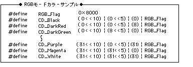

Return to previous page | Return to menu | Go to next page
void
Scroll function
Back screen monochrome color set
void slBack1ColSet(colptr , rgbptr)
void *colptr ;
Unit16 rgbptr ;
colptr VRAM start address to store the back color rgbptr Specify color data with 5 bits for each RGB
Set the back screen.
The back screen refers to the drawing surface located at the back of the screen that is displayed on the part where no other screen is drawn.
None
The color of the back screen is specified with the parameter “rgb”. For the substitution value, refer to the RGB mode color sample “RGB_flag” in the include file “sl_def.h”.

Note) The above values are defined in “sl_def.h” included with the system.
Reference: Chapter 8 Scroll
slBack1ColSet